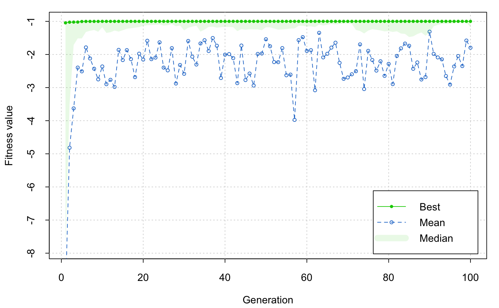
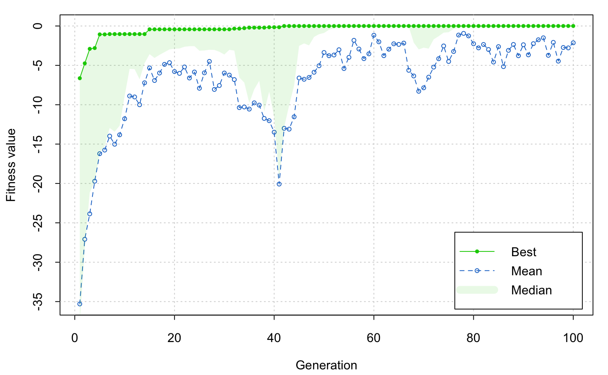

<!-- Generated by pkgdown: do not edit by hand -->
<!DOCTYPE html>
<html>
  <head>
  <meta charset="utf-8">
<meta http-equiv="X-UA-Compatible" content="IE=edge">
<meta name="viewport" content="width=device-width, initial-scale=1.0">

<title>Genetic Algorithms — ga • GA</title>

<!-- jquery -->
<script src="https://code.jquery.com/jquery-3.1.0.min.js" integrity="sha384-nrOSfDHtoPMzJHjVTdCopGqIqeYETSXhZDFyniQ8ZHcVy08QesyHcnOUpMpqnmWq" crossorigin="anonymous"></script>
<!-- Bootstrap -->
<link href="https://maxcdn.bootstrapcdn.com/bootswatch/3.3.7/flatly/bootstrap.min.css" rel="stylesheet" crossorigin="anonymous">

<script src="https://maxcdn.bootstrapcdn.com/bootstrap/3.3.7/js/bootstrap.min.js" integrity="sha384-Tc5IQib027qvyjSMfHjOMaLkfuWVxZxUPnCJA7l2mCWNIpG9mGCD8wGNIcPD7Txa" crossorigin="anonymous"></script>

<!-- Font Awesome icons -->
<link href="https://maxcdn.bootstrapcdn.com/font-awesome/4.6.3/css/font-awesome.min.css" rel="stylesheet" integrity="sha384-T8Gy5hrqNKT+hzMclPo118YTQO6cYprQmhrYwIiQ/3axmI1hQomh7Ud2hPOy8SP1" crossorigin="anonymous">


<!-- pkgdown -->
<link href="../pkgdown.css" rel="stylesheet">
<script src="../jquery.sticky-kit.min.js"></script>
<script src="../pkgdown.js"></script>
  
  
<!-- mathjax -->
<script src='https://mathjax.rstudio.com/latest/MathJax.js?config=TeX-AMS-MML_HTMLorMML'></script>

<!--[if lt IE 9]>
<script src="https://oss.maxcdn.com/html5shiv/3.7.3/html5shiv.min.js"></script>
<script src="https://oss.maxcdn.com/respond/1.4.2/respond.min.js"></script>
<![endif]-->


  </head>

  <body>
    <div class="container template-reference-topic">
      <header>
      <div class="navbar navbar-default navbar-fixed-top" role="navigation">
  <div class="container">
    <div class="navbar-header">
      <button type="button" class="navbar-toggle collapsed" data-toggle="collapse" data-target="#navbar">
        <span class="icon-bar"></span>
        <span class="icon-bar"></span>
        <span class="icon-bar"></span>
      </button>
      <a class="navbar-brand" href="../index.html">GA</a>
    </div>
    <div id="navbar" class="navbar-collapse collapse">
      <ul class="nav navbar-nav">
        <li>
  <a href="../index.html">
    <span class="fa fa-home fa-lg"></span>
     
  </a>
</li>
<li>
  <a href="../articles/GA.html">Get Started</a>
</li>
<li>
  <a href="../reference/index.html">Reference</a>
</li>
<li>
  <a href="../news/index.html">News</a>
</li>
      </ul>
      
      <ul class="nav navbar-nav navbar-right">
        
      </ul>
    </div><!--/.nav-collapse -->
  </div><!--/.container -->
</div><!--/.navbar -->

      
      </header>

      <div class="row">
  <div class="col-md-9 contents">
    <div class="page-header">
    <h1>Genetic Algorithms</h1>
    </div>

    
    <p>Maximization of a fitness function using genetic algorithms (GAs). Local search using general-purpose optimisation algorithms can be applied stochastically to exploit interesting regions. The algorithm can be run sequentially or in parallel using an explicit master-slave parallelisation.</p>
    

    <pre class="usage">ga(type = c("binary", "real-valued", "permutation"), 
   fitness, &#8230;,
   lower, upper, nBits,
   population = gaControl(type)$population,
   selection = gaControl(type)$selection,
   crossover = gaControl(type)$crossover, 
   mutation = gaControl(type)$mutation,
   popSize = 50, 
   pcrossover = 0.8, 
   pmutation = 0.1, 
   elitism = base::max(1, round(popSize*0.05)), 
   updatePop = FALSE,
   postFitness = NULL,
   maxiter = 100,
   run = maxiter,
   maxFitness = Inf,
   names = NULL,
   suggestions = NULL, 
   optim = FALSE,
   optimArgs = list(method = "L-BFGS-B", 
                    poptim = 0.05,
                    pressel = 0.5,
                    control = list(fnscale = -1, maxit = 100)),
   keepBest = FALSE,
   parallel = FALSE,
   monitor = if(interactive()) gaMonitor else FALSE,
   seed = NULL)</pre>
    
    <h2 class="hasAnchor" id="arguments"><a class="anchor" href="#arguments"></a> Arguments</h2>
    <table class="ref-arguments">
    <colgroup><col class="name" /><col class="desc" /></colgroup>
    <tr>
      <th>type</th>
      <td><p>the type of genetic algorithm to be run depending on the nature of decision variables. Possible values are:</p><dl class='dl-horizontal'>
<dt><code>"binary"</code></dt><dd><p>for binary representations of decision variables.</p></dd>
<dt><code>"real-valued"</code></dt><dd><p>for optimization problems where the decision variables are floating-point representations of real numbers.</p></dd>
<dt><code>"permutation"</code></dt><dd><p>for problems that involves reordering of a list of objects.</p></dd>
</dl>
</td>
    </tr>
    <tr>
      <th>fitness</th>
      <td><p>the fitness function, any allowable R function which takes as input an individual <code>string</code> representing a potential solution, and returns a numerical value describing its ``fitness''.</p></td>
    </tr>
    <tr>
      <th>&#8230;</th>
      <td><p>additional arguments to be passed to the fitness function. This allows to write fitness functions that keep some variables fixed during the search.</p></td>
    </tr>
    <tr>
      <th>lower</th>
      <td><p>a vector of length equal to the decision variables providing the lower bounds of the search space in case of real-valued or permutation encoded optimizations. Formerly this argument was named <code>min</code>; its usage is allowed but deprecated.</p></td>
    </tr>
    <tr>
      <th>upper</th>
      <td><p>a vector of length equal to the decision variables providing the upper bounds of the search space in case of real-valued or permutation encoded optimizations. Formerly this argument was named <code>max</code>; its usage is allowed but deprecated.</p></td>
    </tr>
    <tr>
      <th>nBits</th>
      <td><p>a value specifying the number of bits to be used in binary encoded optimizations.</p></td>
    </tr>
    <tr>
      <th>population</th>
      <td><p>an R function for randomly generating an initial population. See <code><a href='ga_Population.html'>ga_Population</a></code> for available functions.</p></td>
    </tr>
    <tr>
      <th>selection</th>
      <td><p>an R function performing selection, i.e. a function which generates a new population of individuals from the current population probabilistically according to individual fitness. See <code><a href='ga_Selection.html'>ga_Selection</a></code> for available functions.</p></td>
    </tr>
    <tr>
      <th>crossover</th>
      <td><p>an R function performing crossover, i.e. a function which forms offsprings by combining part of the genetic information from their parents. See <code><a href='ga_Crossover.html'>ga_Crossover</a></code> for available functions.</p></td>
    </tr>
    <tr>
      <th>mutation</th>
      <td><p>an R function performing mutation, i.e. a function which randomly alters the values of some genes in a parent chromosome. See <code><a href='ga_Mutation.html'>ga_Mutation</a></code> for available functions.</p></td>
    </tr>
    <tr>
      <th>popSize</th>
      <td><p>the population size.</p></td>
    </tr>
    <tr>
      <th>updatePop</th>
      <td><p>a logical defaulting to <code>FALSE</code>. If set at <code>TRUE</code> the first attribute attached to the value returned by the user-defined fitness function is used to update the population. 
<em>Be careful though, this is an experimental feature!</em></p></td>
    </tr>
    <tr>
      <th>postFitness</th>
      <td><p>a user-defined function which, if provided, receives the current <code>ga-class</code> object as input, performs post fitness-evaluation steps, then returns an updated version of the object which is used to update the GA search.
<em>Be careful though, this is an experimental feature!</em></p></td>
    </tr>
    <tr>
      <th>pcrossover</th>
      <td><p>the probability of crossover between pairs of chromosomes. Typically this is a large value and by default is set to 0.8.</p></td>
    </tr>
    <tr>
      <th>pmutation</th>
      <td><p>the probability of mutation in a parent chromosome. Usually mutation occurs with a small probability, and by default is set to 0.1.</p></td>
    </tr>
    <tr>
      <th>elitism</th>
      <td><p>the number of best fitness individuals to survive at each generation. By default the top 5% individuals will survive at each iteration.</p></td>
    </tr>
    <tr>
      <th>maxiter</th>
      <td><p>the maximum number of iterations to run before the GA search is halted.</p></td>
    </tr>
    <tr>
      <th>run</th>
      <td><p>the number of consecutive generations without any improvement in the best fitness value before the GA is stopped.</p></td>
    </tr>
    <tr>
      <th>maxFitness</th>
      <td><p>the upper bound on the fitness function after that the GA search is interrupted.</p></td>
    </tr>
    <tr>
      <th>names</th>
      <td><p>a vector of character strings providing the names of decision variables.</p></td>
    </tr>
    <tr>
      <th>suggestions</th>
      <td><p>a matrix of solutions strings to be included in the initial population. If provided the number of columns must match the number of decision variables.</p></td>
    </tr>
    <tr>
      <th>optim</th>
      <td><p>a logical defaulting to <code>FALSE</code> determining whether or not a local search using general-purpose optimisation algorithms should be used. See argument <code>optimArgs</code> for further details and finer control.</p></td>
    </tr>
    <tr>
      <th>optimArgs</th>
      <td><p>a list controlling the local search algorithm with the following components:</p><dl class='dl-horizontal'>
<dt><code>method</code></dt><dd><p>a string specifying the general-purpose optimisation method to be used, by default is set to <code>"L-BFGS-B"</code>. Other possible methods are those reported in <code><a href='http://www.rdocumentation.org/packages/stats/topics/optim'>optim</a></code>.</p></dd>
<dt><code>poptim</code></dt><dd><p>a value in the range [0,1] specifying the probability of performing a local search at each iteration of GA (default 0.1).</p></dd>
<dt><code>pressel</code></dt><dd><p>a value in the range [0,1] specifying the pressure selection (default 0.5). The local search is started from a random solution selected with probability proportional to fitness. High values of <code>pressel</code> tend to select the solutions with the largest fitness, whereas low values of <code>pressel</code> assign quasi-uniform probabilities to any solution.</p></dd>
<dt><code>control</code></dt><dd><p>a list of control parameters. See 'Details' section in <code><a href='http://www.rdocumentation.org/packages/stats/topics/optim'>optim</a></code>.</p></dd>
</dl>
</td>
    </tr>
    <tr>
      <th>keepBest</th>
      <td><p>a logical argument specifying if best solutions at each iteration should be saved in a slot called <code>bestSol</code>. See <code><a href='ga-class.html'>ga-class</a></code>.</p></td>
    </tr>
    <tr>
      <th>parallel</th>
      <td><p>An optional argument which allows to specify if the Genetic Algorithm should be run sequentially or in parallel.</p>
<p>For a single machine with multiple cores, possible values are:</p><ul>
<li><p>a logical value specifying if parallel computing should be used (<code>TRUE</code>) or not (<code>FALSE</code>, default) for evaluating the fitness function;</p></li>
<li><p>a numerical value which gives the number of cores to employ. By default, this is obtained from the function <code><a href='http://www.rdocumentation.org/packages/parallel/topics/detectCores'>detectCores</a></code>;</p></li>
<li><p>a character string specifying the type of parallelisation to use. This depends on system OS: on Windows OS only <code>"snow"</code> type functionality is available, while on Unix/Linux/Mac OSX both <code>"snow"</code> and <code>"multicore"</code> (default) functionalities are available.</p></li>
</ul><p>In all the cases described above, at the end of the search the cluster is automatically stopped by shutting down the workers.</p>
<p>If a cluster of multiple machines is available, evaluation of the fitness function can be executed in parallel using all, or a subset of, the cores available to the machines belonging to the cluster. However, this option requires more work from the user, who needs to set up and register a parallel back end. 
In this case the cluster must be explicitely stopped with <code><a href='http://www.rdocumentation.org/packages/parallel/topics/makeCluster'>stopCluster</a></code>.</p></td>
    </tr>
    <tr>
      <th>monitor</th>
      <td><p>a logical or an R function which takes as input the current state of the <code>ga-class</code> object and show the evolution of the search. By default, for interactive sessions the function <code><a href='gaMonitor.html'>gaMonitor</a></code> prints the average and best fitness values at each iteration. If set to <code>plot</code> these information are plotted on a graphical device. Other functions can be written by the user and supplied as argument. In non interactive sessions, by default <code>monitor = FALSE</code> so any output is suppressed.</p></td>
    </tr>
    <tr>
      <th>seed</th>
      <td><p>an integer value containing the random number generator state. This argument can be used to replicate the results of a GA search. Note that if parallel computing is required, the <span class="pkg">doRNG</span> package must be installed.</p></td>
    </tr>
    </table>
    
    <h2 class="hasAnchor" id="details"><a class="anchor" href="#details"></a>Details</h2>

    <p>Genetic algorithms (GAs) are stochastic search algorithms inspired by the basic principles of biological evolution and natural selection. GAs simulate the evolution of living organisms, where the fittest individuals dominate over the weaker ones, by mimicking the biological mechanisms of evolution, such as selection, crossover and mutation.</p>
<p>The <span class="pkg">GA</span> package is a collection of general purpose functions that provide a flexible set of tools for applying a wide range of genetic algorithm methods.</p>
<p>The <code>ga</code> function enables the application of GAs to problems where the decision variables are encoded as <code>"binary"</code>, <code>"real-valued"</code>, or <code>"permutation"</code> strings.</p>
<p>Default genetic operators are set via <code><a href='gaControl.html'>gaControl</a></code>. To retrieve the currently set operators:</p><pre>gaControl("binary")</pre>
<pre>gaControl("real-valued")</pre>
<pre>gaControl("permutation")</pre>
    
    <h2 class="hasAnchor" id="value"><a class="anchor" href="#value"></a>Value</h2>

    <p>Returns an object of class <code>ga-class</code>. See <code><a href='ga-class.html'>ga-class</a></code> for a description of available slots information.</p>
    
    <h2 class="hasAnchor" id="references"><a class="anchor" href="#references"></a>References</h2>

    
    <p>Back T., Fogel D., Michalewicz Z. (2000). <em>Evolutionary Computation 1: Basic Algorithms and Operators</em>. IOP Publishing Ltd., Bristol and Philadelphia.</p>
<p>Back T., Fogel D., Michalewicz Z. (2000b). <em>Evolutionary Computation 2: Advanced Algorithms and Operators</em>. IOP Publishing Ltd., Bristol and Philadelphia.</p>
<p>Coley D. (1999). <em>An Introduction to Genetic Algorithms for Scientists and Engineers</em>. World Scientific Pub. Co. Inc., Singapore.</p>
<p>Eiben A., Smith J. (2003). <em>Introduction to Evolutionary Computing</em>. Springer-Verlag, Berlin Heidelberg.</p>
<p>Goldberg D. (1989). <em>Genetic Algorithms in Search, Optimization, and Machine Learning</em>. Addison-Wesley Professional, Boston, MA.</p>
<p>Haupt R. L., Haupt S. E. (2004). <em>Practical Genetic Algorithms</em>. 2nd edition. John Wiley &amp; Sons, New York.</p>
<p>Luke S. (2013) <em>Essentials of Metaheuristics</em>, 2nd edition. Lulu. Freely available at <a href='http://cs.gmu.edu/~sean/book/metaheuristics/'>http://cs.gmu.edu/~sean/book/metaheuristics/</a>.</p>
<p>Scrucca L. (2013). GA: A Package for Genetic Algorithms in R.
<em>Journal of Statistical Software</em>, 53(4), 1-37, <a href='http://www.jstatsoft.org/v53/i04/'>http://www.jstatsoft.org/v53/i04/</a>.</p>
<p>Scrucca, L. (2017) On some extensions to GA package: hybrid optimisation, parallelisation and islands evolution. <em>The R Journal</em>, 9/1, 187-206. <a href='https://journal.r-project.org/archive/2017/RJ-2017-008'>https://journal.r-project.org/archive/2017/RJ-2017-008</a></p>
<p>Simon D. (2013) <em>Evolutionary Optimization Algorithms</em>. John Wiley &amp; Sons.</p>
<p>Sivanandam S., Deepa S. (2007). <em>Introduction to Genetic Algorithms</em>. Springer-Verlag, Berlin Heidelberg.</p>
<p>Yu X., Gen M. (2010). <em>Introduction to Evolutionary Algorithms</em>. Springer-Verlag, Berlin Heidelberg.</p>
    
    <h2 class="hasAnchor" id="see-also"><a class="anchor" href="#see-also"></a>See also</h2>

    <p><code><a href='summary.ga-method.html'>summary,ga-method</a></code>, 
  <code><a href='plot.ga-method.html'>plot,ga-method</a></code>, 
  <code><a href='ga-class.html'>ga-class</a></code>,
  <code><a href='ga_Population.html'>ga_Population</a></code>,
  <code><a href='ga_Selection.html'>ga_Selection</a></code>,
  <code><a href='ga_Crossover.html'>ga_Crossover</a></code>,
  <code><a href='ga_Mutation.html'>ga_Mutation</a></code>,
  <code><a href='gaControl.html'>gaControl</a></code>.</p>
    

    <h2 class="hasAnchor" id="examples"><a class="anchor" href="#examples"></a>Examples</h2>
    <pre class="examples"><div class='input'><span class='co'># 1) one-dimensional function</span>
<span class='no'>f</span> <span class='kw'>&lt;-</span> <span class='kw'>function</span>(<span class='no'>x</span>)  <span class='fu'>abs</span>(<span class='no'>x</span>)+<span class='fu'>cos</span>(<span class='no'>x</span>)
<span class='fu'>curve</span>(<span class='no'>f</span>, -<span class='fl'>20</span>, <span class='fl'>20</span>)</div><div class='img'></div><div class='input'>
<span class='no'>fitness</span> <span class='kw'>&lt;-</span> <span class='kw'>function</span>(<span class='no'>x</span>) -<span class='fu'>f</span>(<span class='no'>x</span>)
<span class='no'>GA</span> <span class='kw'>&lt;-</span> <span class='fu'>ga</span>(<span class='kw'>type</span> <span class='kw'>=</span> <span class='st'>"real-valued"</span>, <span class='kw'>fitness</span> <span class='kw'>=</span> <span class='no'>fitness</span>, <span class='kw'>lower</span> <span class='kw'>=</span> -<span class='fl'>20</span>, <span class='kw'>upper</span> <span class='kw'>=</span> <span class='fl'>20</span>)</div><div class='output co'>#&gt; GA | iter = 1 | Mean = -9.289844 | Best = -1.045110
#&gt; GA | iter = 2 | Mean = -4.816422 | Best = -1.025204
#&gt; GA | iter = 3 | Mean = -3.628468 | Best = -1.022387
#&gt; GA | iter = 4 | Mean = -2.396585 | Best = -1.021526
#&gt; GA | iter = 5 | Mean = -2.509506 | Best = -1.004651
#&gt; GA | iter = 6 | Mean = -1.787341 | Best = -1.001734
#&gt; GA | iter = 7 | Mean = -2.120509 | Best = -1.001734
#&gt; GA | iter = 8 | Mean = -2.430962 | Best = -1.001734
#&gt; GA | iter = 9 | Mean = -2.752652 | Best = -1.001734
#&gt; GA | iter = 10 | Mean = -2.362619 | Best = -1.000401
#&gt; GA | iter = 11 | Mean = -2.896692 | Best = -1.000401
#&gt; GA | iter = 12 | Mean = -2.766199 | Best = -1.000401
#&gt; GA | iter = 13 | Mean = -2.979144 | Best = -1.000401
#&gt; GA | iter = 14 | Mean = -1.861879 | Best = -1.000401
#&gt; GA | iter = 15 | Mean = -2.169051 | Best = -1.000401
#&gt; GA | iter = 16 | Mean = -1.869984 | Best = -1.000401
#&gt; GA | iter = 17 | Mean = -2.140688 | Best = -1.000401
#&gt; GA | iter = 18 | Mean = -2.684804 | Best = -1.000401
#&gt; GA | iter = 19 | Mean = -1.976564 | Best = -1.000401
#&gt; GA | iter = 20 | Mean = -2.154102 | Best = -1.000401
#&gt; GA | iter = 21 | Mean = -1.586392 | Best = -1.000287
#&gt; GA | iter = 22 | Mean = -2.140880 | Best = -1.000287
#&gt; GA | iter = 23 | Mean = -2.094791 | Best = -1.000287
#&gt; GA | iter = 24 | Mean = -1.633475 | Best = -1.000287
#&gt; GA | iter = 25 | Mean = -2.396762 | Best = -1.000287
#&gt; GA | iter = 26 | Mean = -2.480570 | Best = -1.000287
#&gt; GA | iter = 27 | Mean = -1.809139 | Best = -1.000287
#&gt; GA | iter = 28 | Mean = -2.877234 | Best = -1.000287
#&gt; GA | iter = 29 | Mean = -2.318320 | Best = -1.000133
#&gt; GA | iter = 30 | Mean = -2.584422 | Best = -1.000133
#&gt; GA | iter = 31 | Mean = -1.592386 | Best = -1.000133
#&gt; GA | iter = 32 | Mean = -2.066955 | Best = -1.000133
#&gt; GA | iter = 33 | Mean = -2.303506 | Best = -1.000133
#&gt; GA | iter = 34 | Mean = -1.667399 | Best = -1.000067
#&gt; GA | iter = 35 | Mean = -1.570326 | Best = -1.000067
#&gt; GA | iter = 36 | Mean = -1.895785 | Best = -1.000067
#&gt; GA | iter = 37 | Mean = -1.504478 | Best = -1.000067
#&gt; GA | iter = 38 | Mean = -1.735907 | Best = -1.000067
#&gt; GA | iter = 39 | Mean = -2.710604 | Best = -1.000067
#&gt; GA | iter = 40 | Mean = -2.005599 | Best = -1.000067
#&gt; GA | iter = 41 | Mean = -1.989707 | Best = -1.000014
#&gt; GA | iter = 42 | Mean = -2.109714 | Best = -1.000014
#&gt; GA | iter = 43 | Mean = -2.864933 | Best = -1.000014
#&gt; GA | iter = 44 | Mean = -1.730755 | Best = -1.000014
#&gt; GA | iter = 45 | Mean = -2.772582 | Best = -1.000014
#&gt; GA | iter = 46 | Mean = -2.576388 | Best = -1.000014
#&gt; GA | iter = 47 | Mean = -2.937540 | Best = -1.000014
#&gt; GA | iter = 48 | Mean = -1.983997 | Best = -1.000014
#&gt; GA | iter = 49 | Mean = -1.970976 | Best = -1.000014
#&gt; GA | iter = 50 | Mean = -1.540813 | Best = -1.000014
#&gt; GA | iter = 51 | Mean = -1.751778 | Best = -1.000014
#&gt; GA | iter = 52 | Mean = -2.229987 | Best = -1.000014
#&gt; GA | iter = 53 | Mean = -2.231983 | Best = -1.000014
#&gt; GA | iter = 54 | Mean = -1.808254 | Best = -1.000014
#&gt; GA | iter = 55 | Mean = -2.628110 | Best = -1.000014
#&gt; GA | iter = 56 | Mean = -2.609235 | Best = -1.000014
#&gt; GA | iter = 57 | Mean = -3.975592 | Best = -1.000014
#&gt; GA | iter = 58 | Mean = -1.566735 | Best = -1.000014
#&gt; GA | iter = 59 | Mean = -1.476959 | Best = -1.000014
#&gt; GA | iter = 60 | Mean = -1.893063 | Best = -1.000014
#&gt; GA | iter = 61 | Mean = -1.870879 | Best = -1.000014
#&gt; GA | iter = 62 | Mean = -3.080354 | Best = -1.000014
#&gt; GA | iter = 63 | Mean = -1.346251 | Best = -1.000014
#&gt; GA | iter = 64 | Mean = -2.088095 | Best = -1.000014
#&gt; GA | iter = 65 | Mean = -1.979453 | Best = -1.000014
#&gt; GA | iter = 66 | Mean = -1.792202 | Best = -1.000014
#&gt; GA | iter = 67 | Mean = -1.644843 | Best = -1.000014
#&gt; GA | iter = 68 | Mean = -2.253460 | Best = -1.000014
#&gt; GA | iter = 69 | Mean = -2.735662 | Best = -1.000014
#&gt; GA | iter = 70 | Mean = -2.694501 | Best = -1.000014
#&gt; GA | iter = 71 | Mean = -2.599065 | Best = -1.000014
#&gt; GA | iter = 72 | Mean = -2.505042 | Best = -1.000014
#&gt; GA | iter = 73 | Mean = -1.696338 | Best = -1.000014
#&gt; GA | iter = 74 | Mean = -3.044310 | Best = -1.000014
#&gt; GA | iter = 75 | Mean = -1.891012 | Best = -1.000014
#&gt; GA | iter = 76 | Mean = -2.167674 | Best = -1.000014
#&gt; GA | iter = 77 | Mean = -2.486808 | Best = -1.000014
#&gt; GA | iter = 78 | Mean = -2.205420 | Best = -1.000014
#&gt; GA | iter = 79 | Mean = -2.646090 | Best = -1.000014
#&gt; GA | iter = 80 | Mean = -2.284021 | Best = -1.000014
#&gt; GA | iter = 81 | Mean = -2.894676 | Best = -1.000014
#&gt; GA | iter = 82 | Mean = -2.044986 | Best = -1.000014
#&gt; GA | iter = 83 | Mean = -1.816664 | Best = -1.000014
#&gt; GA | iter = 84 | Mean = -1.671748 | Best = -1.000014
#&gt; GA | iter = 85 | Mean = -1.737595 | Best = -1.000014
#&gt; GA | iter = 86 | Mean = -2.432423 | Best = -1.000014
#&gt; GA | iter = 87 | Mean = -2.241086 | Best = -1.000014
#&gt; GA | iter = 88 | Mean = -2.755083 | Best = -1.000014
#&gt; GA | iter = 89 | Mean = -2.683710 | Best = -1.000014
#&gt; GA | iter = 90 | Mean = -1.312036 | Best = -1.000014
#&gt; GA | iter = 91 | Mean = -1.983080 | Best = -1.000014
#&gt; GA | iter = 92 | Mean = -2.088338 | Best = -1.000014
#&gt; GA | iter = 93 | Mean = -2.147273 | Best = -1.000014
#&gt; GA | iter = 94 | Mean = -2.651671 | Best = -1.000014
#&gt; GA | iter = 95 | Mean = -2.908720 | Best = -1.000014
#&gt; GA | iter = 96 | Mean = -2.363003 | Best = -1.000014
#&gt; GA | iter = 97 | Mean = -2.048636 | Best = -1.000014
#&gt; GA | iter = 98 | Mean = -2.350431 | Best = -1.000014
#&gt; GA | iter = 99 | Mean = -1.580022 | Best = -1.000014
#&gt; GA | iter = 100 | Mean = -1.796875 | Best = -1.000014</div><div class='input'><span class='fu'>summary</span>(<span class='no'>GA</span>)</div><div class='output co'>#&gt; ── Genetic Algorithm ─────────────────────────────────────────────────────────────── 
#&gt; 
#&gt; GA settings: 
#&gt; Type                  =  real-valued 
#&gt; Population size       =  50 
#&gt; Number of generations =  100 
#&gt; Elitism               =  2 
#&gt; Crossover probability =  0.8 
#&gt; Mutation probability  =  0.1 
#&gt; Search domain = 
#&gt;        x1
#&gt; lower -20
#&gt; upper  20
#&gt; 
#&gt; GA results: 
#&gt; Iterations             = 100 
#&gt; Fitness function value = -1.000014 
#&gt; Solution = 
#&gt;                x1
#&gt; [1,] 0.0000136497</div><div class='input'><span class='fu'>plot</span>(<span class='no'>GA</span>)</div><div class='img'></div><div class='input'>
<span class='fu'>curve</span>(<span class='no'>f</span>, -<span class='fl'>20</span>, <span class='fl'>20</span>)</div><div class='input'><span class='fu'>abline</span>(<span class='kw'>v</span> <span class='kw'>=</span> <span class='no'>GA</span>@<span class='kw'>solution</span>, <span class='kw'>lty</span> <span class='kw'>=</span> <span class='fl'>3</span>)</div><div class='img'></div><div class='input'>
<span class='co'># 2) one-dimensional function</span>
<span class='no'>f</span> <span class='kw'>&lt;-</span> <span class='kw'>function</span>(<span class='no'>x</span>)  (<span class='no'>x</span>^<span class='fl'>2</span>+<span class='no'>x</span>)*<span class='fu'>cos</span>(<span class='no'>x</span>) <span class='co'># -10 &lt; x &lt; 10</span>
<span class='fu'>curve</span>(<span class='no'>f</span>, -<span class='fl'>10</span>, <span class='fl'>10</span>)</div><div class='img'></div><div class='input'>
<span class='co'># write your own tracing function</span>
<span class='no'>monitor</span> <span class='kw'>&lt;-</span> <span class='kw'>function</span>(<span class='no'>obj</span>)
{
  <span class='fu'>curve</span>(<span class='no'>f</span>, -<span class='fl'>10</span>, <span class='fl'>10</span>, <span class='kw'>main</span> <span class='kw'>=</span> <span class='fu'>paste</span>(<span class='st'>"iteration ="</span>, <span class='no'>obj</span>@<span class='kw'>iter</span>))
  <span class='fu'>points</span>(<span class='no'>obj</span>@<span class='kw'>population</span>, <span class='no'>obj</span>@<span class='kw'>fitness</span>, <span class='kw'>pch</span> <span class='kw'>=</span> <span class='fl'>20</span>, <span class='kw'>col</span> <span class='kw'>=</span> <span class='fl'>2</span>)
  <span class='fu'>rug</span>(<span class='no'>obj</span>@<span class='kw'>population</span>, <span class='kw'>col</span> <span class='kw'>=</span> <span class='fl'>2</span>)
  <span class='fu'>Sys.sleep</span>(<span class='fl'>0.2</span>)
}</div><span class='co'># NOT RUN {</span>
<span class='no'>GA</span> <span class='kw'>&lt;-</span> <span class='fu'>ga</span>(<span class='kw'>type</span> <span class='kw'>=</span> <span class='st'>"real-valued"</span>, <span class='kw'>fitness</span> <span class='kw'>=</span> <span class='no'>f</span>, <span class='kw'>lower</span> <span class='kw'>=</span> -<span class='fl'>10</span>, <span class='kw'>upper</span> <span class='kw'>=</span> <span class='fl'>10</span>, <span class='kw'>monitor</span> <span class='kw'>=</span> <span class='no'>monitor</span>)
<span class='co'># }</span><div class='input'><span class='co'># or if you want to suppress the tracing</span>
<span class='no'>GA</span> <span class='kw'>&lt;-</span> <span class='fu'>ga</span>(<span class='kw'>type</span> <span class='kw'>=</span> <span class='st'>"real-valued"</span>, <span class='kw'>fitness</span> <span class='kw'>=</span> <span class='no'>f</span>, <span class='kw'>lower</span> <span class='kw'>=</span> -<span class='fl'>10</span>, <span class='kw'>upper</span> <span class='kw'>=</span> <span class='fl'>10</span>, <span class='kw'>monitor</span> <span class='kw'>=</span> <span class='kw'>NULL</span>)
<span class='fu'>summary</span>(<span class='no'>GA</span>)</div><div class='output co'>#&gt; ── Genetic Algorithm ─────────────────────────────────────────────────────────────── 
#&gt; 
#&gt; GA settings: 
#&gt; Type                  =  real-valued 
#&gt; Population size       =  50 
#&gt; Number of generations =  100 
#&gt; Elitism               =  2 
#&gt; Crossover probability =  0.8 
#&gt; Mutation probability  =  0.1 
#&gt; Search domain = 
#&gt;        x1
#&gt; lower -10
#&gt; upper  10
#&gt; 
#&gt; GA results: 
#&gt; Iterations             = 100 
#&gt; Fitness function value = 47.70562 
#&gt; Solution = 
#&gt;            x1
#&gt; [1,] 6.560483</div><div class='input'>
<span class='fu'>monitor</span>(<span class='no'>GA</span>)</div><div class='input'><span class='fu'>abline</span>(<span class='kw'>v</span> <span class='kw'>=</span> <span class='no'>GA</span>@<span class='kw'>solution</span>, <span class='kw'>lty</span> <span class='kw'>=</span> <span class='fl'>3</span>)</div><div class='img'></div><div class='input'>
<span class='co'># 3) two-dimensional Rastrigin function</span>

<span class='no'>Rastrigin</span> <span class='kw'>&lt;-</span> <span class='kw'>function</span>(<span class='no'>x1</span>, <span class='no'>x2</span>)
{
  <span class='fl'>20</span> + <span class='no'>x1</span>^<span class='fl'>2</span> + <span class='no'>x2</span>^<span class='fl'>2</span> - <span class='fl'>10</span>*(<span class='fu'>cos</span>(<span class='fl'>2</span>*<span class='no'>pi</span>*<span class='no'>x1</span>) + <span class='fu'>cos</span>(<span class='fl'>2</span>*<span class='no'>pi</span>*<span class='no'>x2</span>))
}

<span class='no'>x1</span> <span class='kw'>&lt;-</span> <span class='no'>x2</span> <span class='kw'>&lt;-</span> <span class='fu'>seq</span>(-<span class='fl'>5.12</span>, <span class='fl'>5.12</span>, <span class='kw'>by</span> <span class='kw'>=</span> <span class='fl'>0.1</span>)
<span class='no'>f</span> <span class='kw'>&lt;-</span> <span class='fu'>outer</span>(<span class='no'>x1</span>, <span class='no'>x2</span>, <span class='no'>Rastrigin</span>)
<span class='fu'><a href='persp3D.html'>persp3D</a></span>(<span class='no'>x1</span>, <span class='no'>x2</span>, <span class='no'>f</span>, <span class='kw'>theta</span> <span class='kw'>=</span> <span class='fl'>50</span>, <span class='kw'>phi</span> <span class='kw'>=</span> <span class='fl'>20</span>)</div><div class='img'></div><div class='input'><span class='fu'>filled.contour</span>(<span class='no'>x1</span>, <span class='no'>x2</span>, <span class='no'>f</span>, <span class='kw'>color.palette</span> <span class='kw'>=</span> <span class='no'>jet.colors</span>)</div><div class='img'></div><div class='input'>
<span class='no'>GA</span> <span class='kw'>&lt;-</span> <span class='fu'>ga</span>(<span class='kw'>type</span> <span class='kw'>=</span> <span class='st'>"real-valued"</span>, <span class='kw'>fitness</span> <span class='kw'>=</span>  <span class='kw'>function</span>(<span class='no'>x</span>) -<span class='fu'>Rastrigin</span>(<span class='no'>x</span>[<span class='fl'>1</span>], <span class='no'>x</span>[<span class='fl'>2</span>]),
         <span class='kw'>lower</span> <span class='kw'>=</span> <span class='fu'>c</span>(-<span class='fl'>5.12</span>, -<span class='fl'>5.12</span>), <span class='kw'>upper</span> <span class='kw'>=</span> <span class='fu'>c</span>(<span class='fl'>5.12</span>, <span class='fl'>5.12</span>),
         <span class='kw'>popSize</span> <span class='kw'>=</span> <span class='fl'>50</span>, <span class='kw'>maxiter</span> <span class='kw'>=</span> <span class='fl'>100</span>)</div><div class='output co'>#&gt; GA | iter = 1 | Mean = -35.30202 | Best =  -6.63342
#&gt; GA | iter = 2 | Mean = -27.087203 | Best =  -4.744248
#&gt; GA | iter = 3 | Mean = -23.860744 | Best =  -2.903478
#&gt; GA | iter = 4 | Mean = -19.714490 | Best =  -2.803415
#&gt; GA | iter = 5 | Mean = -16.216047 | Best =  -1.066667
#&gt; GA | iter = 6 | Mean = -15.761357 | Best =  -1.066667
#&gt; GA | iter = 7 | Mean = -13.983552 | Best =  -1.026629
#&gt; GA | iter = 8 | Mean = -15.016208 | Best =  -1.026629
#&gt; GA | iter = 9 | Mean = -13.822691 | Best =  -1.026629
#&gt; GA | iter = 10 | Mean = -11.783262 | Best =  -1.026629
#&gt; GA | iter = 11 | Mean = -8.895227 | Best = -1.026419
#&gt; GA | iter = 12 | Mean = -9.014286 | Best = -1.026419
#&gt; GA | iter = 13 | Mean = -10.006494 | Best =  -1.026419
#&gt; GA | iter = 14 | Mean = -7.212479 | Best = -1.026419
#&gt; GA | iter = 15 | Mean = -5.3264039 | Best = -0.4233527
#&gt; GA | iter = 16 | Mean = -6.9209813 | Best = -0.4233527
#&gt; GA | iter = 17 | Mean = -5.9740779 | Best = -0.4233527
#&gt; GA | iter = 18 | Mean = -4.8720608 | Best = -0.4233527
#&gt; GA | iter = 19 | Mean = -4.6567881 | Best = -0.4233527
#&gt; GA | iter = 20 | Mean = -5.7875700 | Best = -0.4233527
#&gt; GA | iter = 21 | Mean = -6.0184119 | Best = -0.4233527
#&gt; GA | iter = 22 | Mean = -5.2041417 | Best = -0.4233527
#&gt; GA | iter = 23 | Mean = -6.6050344 | Best = -0.4233527
#&gt; GA | iter = 24 | Mean = -5.8444084 | Best = -0.4233527
#&gt; GA | iter = 25 | Mean = -7.9067034 | Best = -0.4233527
#&gt; GA | iter = 26 | Mean = -5.9480325 | Best = -0.4233527
#&gt; GA | iter = 27 | Mean = -4.4999254 | Best = -0.4233527
#&gt; GA | iter = 28 | Mean = -8.0571279 | Best = -0.4233527
#&gt; GA | iter = 29 | Mean = -7.5610529 | Best = -0.4233527
#&gt; GA | iter = 30 | Mean = -5.9736053 | Best = -0.4233527
#&gt; GA | iter = 31 | Mean = -6.2373789 | Best = -0.4233527
#&gt; GA | iter = 32 | Mean = -6.8072966 | Best = -0.3328114
#&gt; GA | iter = 33 | Mean = -10.3642528 | Best =  -0.3328114
#&gt; GA | iter = 34 | Mean = -10.2865095 | Best =  -0.2737745
#&gt; GA | iter = 35 | Mean = -10.5558588 | Best =  -0.2063575
#&gt; GA | iter = 36 | Mean = -9.7607193 | Best = -0.2063575
#&gt; GA | iter = 37 | Mean = -10.0486809 | Best =  -0.2063575
#&gt; GA | iter = 38 | Mean = -11.7407707 | Best =  -0.2063575
#&gt; GA | iter = 39 | Mean = -12.0264632 | Best =  -0.1574825
#&gt; GA | iter = 40 | Mean = -13.4884471 | Best =  -0.1574825
#&gt; GA | iter = 41 | Mean = -20.0785300 | Best =  -0.1574825
#&gt; GA | iter = 42 | Mean = -12.996325591 | Best =  -0.004078746
#&gt; GA | iter = 43 | Mean = -13.101481089 | Best =  -0.004078746
#&gt; GA | iter = 44 | Mean = -11.538784011 | Best =  -0.004078746
#&gt; GA | iter = 45 | Mean = -6.604709111 | Best = -0.004078746
#&gt; GA | iter = 46 | Mean = -6.768047484 | Best = -0.004078746
#&gt; GA | iter = 47 | Mean = -6.535782076 | Best = -0.004078746
#&gt; GA | iter = 48 | Mean = -5.875332663 | Best = -0.004078746
#&gt; GA | iter = 49 | Mean = -5.053972495 | Best = -0.004078746
#&gt; GA | iter = 50 | Mean = -3.366953479 | Best = -0.004078746
#&gt; GA | iter = 51 | Mean = -3.777366565 | Best = -0.004078746
#&gt; GA | iter = 52 | Mean = -3.684841789 | Best = -0.004078746
#&gt; GA | iter = 53 | Mean = -3.018238956 | Best = -0.000575363
#&gt; GA | iter = 54 | Mean = -5.403007893 | Best = -0.000575363
#&gt; GA | iter = 55 | Mean = -3.982595000 | Best = -0.000575363
#&gt; GA | iter = 56 | Mean = -1.820200708 | Best = -0.000575363
#&gt; GA | iter = 57 | Mean = -2.923569311 | Best = -0.000575363
#&gt; GA | iter = 58 | Mean = -4.145723242 | Best = -0.000575363
#&gt; GA | iter = 59 | Mean = -3.537339788 | Best = -0.000575363
#&gt; GA | iter = 60 | Mean = -1.173283669 | Best = -0.000575363
#&gt; GA | iter = 61 | Mean = -2.012935496 | Best = -0.000575363
#&gt; GA | iter = 62 | Mean = -3.771540218 | Best = -0.000575363
#&gt; GA | iter = 63 | Mean = -2.9462656794 | Best = -0.0002668733
#&gt; GA | iter = 64 | Mean = -2.2634355580 | Best = -0.0002668733
#&gt; GA | iter = 65 | Mean = -2.3388972854 | Best = -0.0002668733
#&gt; GA | iter = 66 | Mean = -2.1727936714 | Best = -0.0002668733
#&gt; GA | iter = 67 | Mean = -5.62973053421 | Best = -0.00006926274
#&gt; GA | iter = 68 | Mean = -6.34621464120 | Best = -0.00006926274
#&gt; GA | iter = 69 | Mean = -8.28996496720 | Best = -0.00006926274
#&gt; GA | iter = 70 | Mean = -7.85187850531 | Best = -0.00006926274
#&gt; GA | iter = 71 | Mean = -6.49673021678 | Best = -0.00006926274
#&gt; GA | iter = 72 | Mean = -5.22352980672 | Best = -0.00006926274
#&gt; GA | iter = 73 | Mean = -4.15749934933 | Best = -0.00006926274
#&gt; GA | iter = 74 | Mean = -2.53476117036 | Best = -0.00006926274
#&gt; GA | iter = 75 | Mean = -4.50714704638 | Best = -0.00006926274
#&gt; GA | iter = 76 | Mean = -3.23986092678 | Best = -0.00006926274
#&gt; GA | iter = 77 | Mean = -1.15410286460 | Best = -0.00006926274
#&gt; GA | iter = 78 | Mean = -0.94006053435 | Best = -0.00006926274
#&gt; GA | iter = 79 | Mean = -1.260072681000 | Best = -0.000001442858
#&gt; GA | iter = 80 | Mean = -2.255874730591 | Best = -0.000001442858
#&gt; GA | iter = 81 | Mean = -2.778961958463 | Best = -0.000001442858
#&gt; GA | iter = 82 | Mean = -2.350187859515 | Best = -0.000001442858
#&gt; GA | iter = 83 | Mean = -2.985945484233 | Best = -0.000001442858
#&gt; GA | iter = 84 | Mean = -4.579179964236 | Best = -0.000001442858
#&gt; GA | iter = 85 | Mean = -2.623901067273 | Best = -0.000001442858
#&gt; GA | iter = 86 | Mean = -5.161045285122 | Best = -0.000001442858
#&gt; GA | iter = 87 | Mean = -3.096352845169 | Best = -0.000001442858
#&gt; GA | iter = 88 | Mean = -2.346957410490 | Best = -0.000001442858
#&gt; GA | iter = 89 | Mean = -3.778880023627 | Best = -0.000001442858
#&gt; GA | iter = 90 | Mean = -2.381158008559 | Best = -0.000001442858
#&gt; GA | iter = 91 | Mean = -3.668216647835 | Best = -0.000001442858
#&gt; GA | iter = 92 | Mean = -2.246160545644 | Best = -0.000001442858
#&gt; GA | iter = 93 | Mean = -1.752796857213 | Best = -0.000001442858
#&gt; GA | iter = 94 | Mean = -1.501983825229 | Best = -0.000001442858
#&gt; GA | iter = 95 | Mean = -3.728011338119 | Best = -0.000001442858
#&gt; GA | iter = 96 | Mean = -2.081923276729 | Best = -0.000001442858
#&gt; GA | iter = 97 | Mean = -4.465927340492 | Best = -0.000001442858
#&gt; GA | iter = 98 | Mean = -2.732513103495 | Best = -0.000001442858
#&gt; GA | iter = 99 | Mean = -2.784725081956 | Best = -0.000001442858
#&gt; GA | iter = 100 | Mean = -2.1353969739527 | Best = -0.0000001243575</div><div class='input'><span class='fu'>summary</span>(<span class='no'>GA</span>)</div><div class='output co'>#&gt; ── Genetic Algorithm ─────────────────────────────────────────────────────────────── 
#&gt; 
#&gt; GA settings: 
#&gt; Type                  =  real-valued 
#&gt; Population size       =  50 
#&gt; Number of generations =  100 
#&gt; Elitism               =  2 
#&gt; Crossover probability =  0.8 
#&gt; Mutation probability  =  0.1 
#&gt; Search domain = 
#&gt;          x1    x2
#&gt; lower -5.12 -5.12
#&gt; upper  5.12  5.12
#&gt; 
#&gt; GA results: 
#&gt; Iterations             = 100 
#&gt; Fitness function value = -0.0000001243575 
#&gt; Solution = 
#&gt;                   x1            x2
#&gt; [1,] -0.000008890527 0.00002340482</div><div class='input'><span class='fu'>plot</span>(<span class='no'>GA</span>)</div><div class='img'></div><div class='input'>
# 4) Parallel GA
# Simple example of an expensive fitness function obtained artificially by
# introducing a pause statement. 
</div><span class='co'># NOT RUN {</span>
<span class='no'>Rastrigin</span> <span class='kw'>&lt;-</span> <span class='kw'>function</span>(<span class='no'>x1</span>, <span class='no'>x2</span>)
{
  <span class='fu'>Sys.sleep</span>(<span class='fl'>0.1</span>)
  <span class='fl'>20</span> + <span class='no'>x1</span>^<span class='fl'>2</span> + <span class='no'>x2</span>^<span class='fl'>2</span> - <span class='fl'>10</span>*(<span class='fu'>cos</span>(<span class='fl'>2</span>*<span class='no'>pi</span>*<span class='no'>x1</span>) + <span class='fu'>cos</span>(<span class='fl'>2</span>*<span class='no'>pi</span>*<span class='no'>x2</span>))
}

<span class='fu'>system.time</span>(<span class='no'>GA1</span> <span class='kw'>&lt;-</span> <span class='fu'>ga</span>(<span class='kw'>type</span> <span class='kw'>=</span> <span class='st'>"real-valued"</span>,
                      <span class='kw'>fitness</span> <span class='kw'>=</span>  <span class='kw'>function</span>(<span class='no'>x</span>) -<span class='fu'>Rastrigin</span>(<span class='no'>x</span>[<span class='fl'>1</span>], <span class='no'>x</span>[<span class='fl'>2</span>]),
                      <span class='kw'>lower</span> <span class='kw'>=</span> <span class='fu'>c</span>(-<span class='fl'>5.12</span>, -<span class='fl'>5.12</span>), <span class='kw'>upper</span> <span class='kw'>=</span> <span class='fu'>c</span>(<span class='fl'>5.12</span>, <span class='fl'>5.12</span>),
                      <span class='kw'>popSize</span> <span class='kw'>=</span> <span class='fl'>50</span>, <span class='kw'>maxiter</span> <span class='kw'>=</span> <span class='fl'>100</span>, <span class='kw'>monitor</span> <span class='kw'>=</span> <span class='fl'>FALSE</span>,
                      <span class='kw'>seed</span> <span class='kw'>=</span> <span class='fl'>12345</span>))

<span class='fu'>system.time</span>(<span class='no'>GA2</span> <span class='kw'>&lt;-</span> <span class='fu'>ga</span>(<span class='kw'>type</span> <span class='kw'>=</span> <span class='st'>"real-valued"</span>,
                      <span class='kw'>fitness</span> <span class='kw'>=</span>  <span class='kw'>function</span>(<span class='no'>x</span>) -<span class='fu'>Rastrigin</span>(<span class='no'>x</span>[<span class='fl'>1</span>], <span class='no'>x</span>[<span class='fl'>2</span>]),
                      <span class='kw'>lower</span> <span class='kw'>=</span> <span class='fu'>c</span>(-<span class='fl'>5.12</span>, -<span class='fl'>5.12</span>), <span class='kw'>upper</span> <span class='kw'>=</span> <span class='fu'>c</span>(<span class='fl'>5.12</span>, <span class='fl'>5.12</span>),
                      <span class='kw'>popSize</span> <span class='kw'>=</span> <span class='fl'>50</span>, <span class='kw'>maxiter</span> <span class='kw'>=</span> <span class='fl'>100</span>, <span class='kw'>monitor</span> <span class='kw'>=</span> <span class='fl'>FALSE</span>,
                      <span class='kw'>seed</span> <span class='kw'>=</span> <span class='fl'>12345</span>, <span class='kw'>parallel</span> <span class='kw'>=</span> <span class='fl'>TRUE</span>))
<span class='co'># }</span><div class='input'>
<span class='co'># 5) Hybrid GA</span>
<span class='co'># Example of GA with local search </span>

<span class='no'>Rastrigin</span> <span class='kw'>&lt;-</span> <span class='kw'>function</span>(<span class='no'>x1</span>, <span class='no'>x2</span>)
{
  <span class='fl'>20</span> + <span class='no'>x1</span>^<span class='fl'>2</span> + <span class='no'>x2</span>^<span class='fl'>2</span> - <span class='fl'>10</span>*(<span class='fu'>cos</span>(<span class='fl'>2</span>*<span class='no'>pi</span>*<span class='no'>x1</span>) + <span class='fu'>cos</span>(<span class='fl'>2</span>*<span class='no'>pi</span>*<span class='no'>x2</span>))
}

<span class='no'>GA</span> <span class='kw'>&lt;-</span> <span class='fu'>ga</span>(<span class='kw'>type</span> <span class='kw'>=</span> <span class='st'>"real-valued"</span>,
         <span class='kw'>fitness</span> <span class='kw'>=</span>  <span class='kw'>function</span>(<span class='no'>x</span>) -<span class='fu'>Rastrigin</span>(<span class='no'>x</span>[<span class='fl'>1</span>], <span class='no'>x</span>[<span class='fl'>2</span>]),
         <span class='kw'>lower</span> <span class='kw'>=</span> <span class='fu'>c</span>(-<span class='fl'>5.12</span>, -<span class='fl'>5.12</span>), <span class='kw'>upper</span> <span class='kw'>=</span> <span class='fu'>c</span>(<span class='fl'>5.12</span>, <span class='fl'>5.12</span>),
         <span class='kw'>popSize</span> <span class='kw'>=</span> <span class='fl'>50</span>, <span class='kw'>maxiter</span> <span class='kw'>=</span> <span class='fl'>100</span>,
         <span class='kw'>optim</span> <span class='kw'>=</span> <span class='fl'>TRUE</span>)</div><div class='output co'>#&gt; GA | iter = 1 | Mean = -34.413935 | Best =  -9.722431
#&gt; GA | iter = 2 | Mean = -31.872884 | Best =  -5.730162
#&gt; GA | iter = 3 | Mean = -22.695456 | Best =  -5.730162
#&gt; GA | iter = 4 | Mean = -22.877690 | Best =  -5.730162 | Local search = -7.959662
#&gt; GA | iter = 5 | Mean = -21.555094 | Best =  -3.633053
#&gt; GA | iter = 6 | Mean = -19.3587976 | Best =  -0.4394306
#&gt; GA | iter = 7 | Mean = -17.2718107 | Best =  -0.4394306
#&gt; GA | iter = 8 | Mean = -13.6160674 | Best =  -0.4394306
#&gt; GA | iter = 9 | Mean = -12.3642255 | Best =  -0.4394306
#&gt; GA | iter = 10 | Mean = -13.5288924 | Best =  -0.4394306
#&gt; GA | iter = 11 | Mean = -15.4786002 | Best =  -0.4394306
#&gt; GA | iter = 12 | Mean = -12.6279961 | Best =  -0.3617206
#&gt; GA | iter = 13 | Mean = -13.0095358 | Best =  -0.3617206
#&gt; GA | iter = 14 | Mean = -13.0392104 | Best =  -0.3617206
#&gt; GA | iter = 15 | Mean = -14.8440686 | Best =  -0.3617206
#&gt; GA | iter = 16 | Mean = -12.3029544 | Best =  -0.3352464
#&gt; GA | iter = 17 | Mean = -11.5704581 | Best =  -0.3352464
#&gt; GA | iter = 18 | Mean = -7.3013490 | Best = -0.2630043
#&gt; GA | iter = 19 | Mean = -5.3252962 | Best = -0.2347363
#&gt; GA | iter = 20 | Mean = -5.506756 | Best = -0.118043
#&gt; GA | iter = 21 | Mean = -5.309631337 | Best = -0.006647098
#&gt; GA | iter = 22 | Mean = -6.266137048 | Best = -0.006647098
#&gt; GA | iter = 23 | Mean = -5.306710050 | Best = -0.006647098
#&gt; GA | iter = 24 | Mean = -6.704363692 | Best = -0.006647098
#&gt; GA | iter = 25 | Mean = -7.136049135 | Best = -0.006647098
#&gt; GA | iter = 26 | Mean = -6.266236279 | Best = -0.006647098
#&gt; GA | iter = 27 | Mean = -5.373767482 | Best = -0.006647098
#&gt; GA | iter = 28 | Mean = -6.481595374 | Best = -0.006647098
#&gt; GA | iter = 29 | Mean = -7.446616463 | Best = -0.006647098
#&gt; GA | iter = 30 | Mean = -4.290156483 | Best = -0.006647098
#&gt; GA | iter = 31 | Mean = -2.948351558 | Best = -0.004015509
#&gt; GA | iter = 32 | Mean = -3.402297818 | Best = -0.004015509
#&gt; GA | iter = 33 | Mean = -3.081861023 | Best = -0.004015509
#&gt; GA | iter = 34 | Mean = -3.803042048 | Best = -0.004015509
#&gt; GA | iter = 35 | Mean = -5.618721668 | Best = -0.004015509
#&gt; GA | iter = 36 | Mean = -3.900098029 | Best = -0.004015509
#&gt; GA | iter = 37 | Mean = -4.369459758 | Best = -0.001049368
#&gt; GA | iter = 38 | Mean = -4.864388876 | Best = -0.001049368
#&gt; GA | iter = 39 | Mean = -4.842763243 | Best = -0.001049368
#&gt; GA | iter = 40 | Mean = -5.667685427 | Best = -0.001049368
#&gt; GA | iter = 41 | Mean = -4.978018564 | Best = -0.001049368
#&gt; GA | iter = 42 | Mean = -9.539360622 | Best = -0.001049368
#&gt; GA | iter = 43 | Mean = -8.624038824 | Best = -0.001049368
#&gt; GA | iter = 44 | Mean = -7.745976809 | Best = -0.001049368
#&gt; GA | iter = 45 | Mean = -8.108271985 | Best = -0.001049368
#&gt; GA | iter = 46 | Mean = -6.061814781 | Best = -0.001049368
#&gt; GA | iter = 47 | Mean = -7.459877961 | Best = -0.001049368
#&gt; GA | iter = 48 | Mean = -4.163493001 | Best = -0.001049368
#&gt; GA | iter = 49 | Mean = -5.523234825 | Best = -0.001049368
#&gt; GA | iter = 50 | Mean = -5.348467574 | Best = -0.001049368
#&gt; GA | iter = 51 | Mean = -4.239679055 | Best = -0.001049368
#&gt; GA | iter = 52 | Mean = -4.047664425 | Best = -0.001049368 | Local search = 0
#&gt; GA | iter = 53 | Mean = -6.137486 | Best =  0.000000
#&gt; GA | iter = 54 | Mean = -6.520279 | Best =  0.000000
#&gt; GA | iter = 55 | Mean = -5.355958 | Best =  0.000000
#&gt; GA | iter = 56 | Mean = -3.351716 | Best =  0.000000
#&gt; GA | iter = 57 | Mean = -4.866191 | Best =  0.000000
#&gt; GA | iter = 58 | Mean = -1.452467 | Best =  0.000000
#&gt; GA | iter = 59 | Mean = -0.5475041 | Best =  0.0000000
#&gt; GA | iter = 60 | Mean = -1.979198 | Best =  0.000000
#&gt; GA | iter = 61 | Mean = -4.713283 | Best =  0.000000
#&gt; GA | iter = 62 | Mean = -4.570124 | Best =  0.000000
#&gt; GA | iter = 63 | Mean = -4.379057 | Best =  0.000000
#&gt; GA | iter = 64 | Mean = -4.056287 | Best =  0.000000
#&gt; GA | iter = 65 | Mean = -2.902647 | Best =  0.000000
#&gt; GA | iter = 66 | Mean = -3.268083 | Best =  0.000000
#&gt; GA | iter = 67 | Mean = -2.078103 | Best =  0.000000
#&gt; GA | iter = 68 | Mean = -1.152319 | Best =  0.000000
#&gt; GA | iter = 69 | Mean = -3.077821 | Best =  0.000000
#&gt; GA | iter = 70 | Mean = -2.878926 | Best =  0.000000
#&gt; GA | iter = 71 | Mean = -3.790693 | Best =  0.000000
#&gt; GA | iter = 72 | Mean = -3.02291 | Best =  0.00000
#&gt; GA | iter = 73 | Mean = -1.5311 | Best =  0.0000
#&gt; GA | iter = 74 | Mean = -4.045037 | Best =  0.000000
#&gt; GA | iter = 75 | Mean = -2.446893 | Best =  0.000000
#&gt; GA | iter = 76 | Mean = -3.64567 | Best =  0.00000
#&gt; GA | iter = 77 | Mean = -4.251634 | Best =  0.000000
#&gt; GA | iter = 78 | Mean = -4.153804 | Best =  0.000000
#&gt; GA | iter = 79 | Mean = -3.489337 | Best =  0.000000
#&gt; GA | iter = 80 | Mean = -4.767921 | Best =  0.000000
#&gt; GA | iter = 81 | Mean = -5.995782 | Best =  0.000000
#&gt; GA | iter = 82 | Mean = -4.331599 | Best =  0.000000
#&gt; GA | iter = 83 | Mean = -6.305789 | Best =  0.000000
#&gt; GA | iter = 84 | Mean = -5.685486 | Best =  0.000000
#&gt; GA | iter = 85 | Mean = -4.235987 | Best =  0.000000
#&gt; GA | iter = 86 | Mean = -2.577244 | Best =  0.000000
#&gt; GA | iter = 87 | Mean = -4.804355 | Best =  0.000000
#&gt; GA | iter = 88 | Mean = -4.663081 | Best =  0.000000
#&gt; GA | iter = 89 | Mean = -4.480725 | Best =  0.000000
#&gt; GA | iter = 90 | Mean = -6.405044 | Best =  0.000000
#&gt; GA | iter = 91 | Mean = -4.39711 | Best =  0.00000
#&gt; GA | iter = 92 | Mean = -3.896517 | Best =  0.000000
#&gt; GA | iter = 93 | Mean = -1.650858 | Best =  0.000000
#&gt; GA | iter = 94 | Mean = -2.528911 | Best =  0.000000
#&gt; GA | iter = 95 | Mean = -3.094203 | Best =  0.000000
#&gt; GA | iter = 96 | Mean = -4.327205 | Best =  0.000000
#&gt; GA | iter = 97 | Mean = -4.350358 | Best =  0.000000
#&gt; GA | iter = 98 | Mean = -4.66806 | Best =  0.00000
#&gt; GA | iter = 99 | Mean = -3.817126 | Best =  0.000000
#&gt; GA | iter = 100 | Mean = -3.738854 | Best =  0.000000 | Final local search = 0</div><div class='input'><span class='fu'>summary</span>(<span class='no'>GA</span>)</div><div class='output co'>#&gt; ── Genetic Algorithm ─────────────────────────────────────────────────────────────── 
#&gt; 
#&gt; GA settings: 
#&gt; Type                  =  real-valued 
#&gt; Population size       =  50 
#&gt; Number of generations =  100 
#&gt; Elitism               =  2 
#&gt; Crossover probability =  0.8 
#&gt; Mutation probability  =  0.1 
#&gt; Search domain = 
#&gt;          x1    x2
#&gt; lower -5.12 -5.12
#&gt; upper  5.12  5.12
#&gt; 
#&gt; GA results: 
#&gt; Iterations             = 100 
#&gt; Fitness function value = 0 
#&gt; Solution = 
#&gt;                       x1                   x2
#&gt; [1,] -0.0000000000197952 -0.00000000004678766</div><div class='input'>
</div></pre>
  </div>
  <div class="col-md-3 hidden-xs hidden-sm" id="sidebar">
    <h2>Contents</h2>
    <ul class="nav nav-pills nav-stacked">
      <li><a href="#arguments">Arguments</a></li>
      
      <li><a href="#details">Details</a></li>

      <li><a href="#value">Value</a></li>

      <li><a href="#references">References</a></li>

      <li><a href="#see-also">See also</a></li>
      
      <li><a href="#examples">Examples</a></li>
    </ul>

    <h2>Author</h2>
    Luca Scrucca <a href='mailto:luca.scrucca@unipg.it'>luca.scrucca@unipg.it</a>
  </div>
</div>

      <footer>
      <div class="copyright">
  <p>Developed by Luca Scrucca.</p>
</div>

<div class="pkgdown">
  <p>Site built with <a href="http://pkgdown.r-lib.org/">pkgdown</a>.</p>
</div>

      </footer>
   </div>

  </body>
</html>
